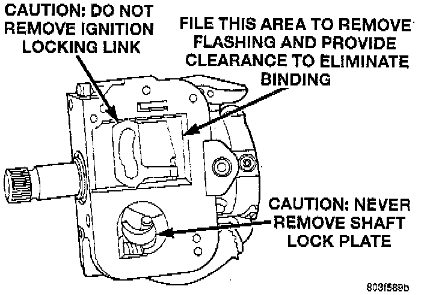

Steering Column: Testing and Inspection

IGNITION SWITCH
If the ignition switch effort is excessive, remove the ignition switch from the steering column. Using a key cylinder, check the turning effort of the switch. If the ignition switch binds look for the following conditions.
1. Look for rough areas or flash in the casting and if found remove with a file.
2. Remove the link and slider and check the link to see if it is bent. If so replace with a new part.
3. Put the slider in its slot in the sleeve and verify a loose fit over the length of the slot. If the slider binds in the slot at any point lightly file the slider until clearance is achieved.
4. If no binding is found, lightly file the ramp on the ignition switch, (The ramp fits into the casting) until binding no longer occurs.